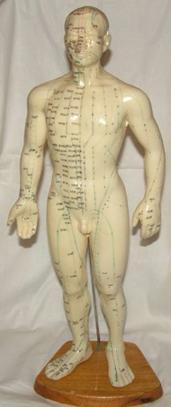

A meridiánokat úgy kell elképzelni mint energiaszállító csatornák a testben az test középpontjából a test végtagjaiba. A csatornák összefüggő rendszert alkotnak, amelyek két óránkét átadják egymásnak az energiát. Az akupunktúrás kezelés a csatornák bizonyos pontjain történik. 12 fő csatorna található. 